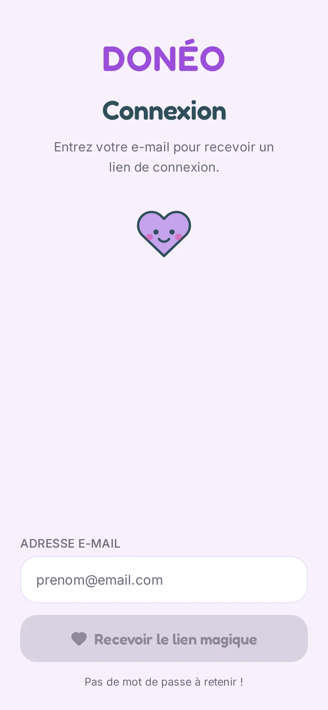

Léa, 27 ans
Offrante« Je préfère que ça serve à quelqu’un. »
Déménage dans trois semaines et doit vider son appartement sans passer par la déchetterie. Elle veut que ses meubles servent encore.
Donné, pas jeté.
Le don d’objets entre particuliers de la Métropole de Lyon : l’offrant fixe librement une participation solidaire, reversée à l’association de son choix, moins une micro-commission.
Télécharger le pitch J3 (PDF, 3,4 Mo)
Le modèle économique et la proposition de valeur de Donéo, tels que construits par l’équipe.
Deux personas, un storyboard et leurs deux parcours.
« Je préfère que ça serve à quelqu’un. »
Déménage dans trois semaines et doit vider son appartement sans passer par la déchetterie. Elle veut que ses meubles servent encore.
« Je n’ai rien demandé à personne. »
Étudiant, il vient d’emménager dans un studio non meublé. Budget très serré, pas de voiture, et l’envie de ne pas se sentir assisté.
Une identité douce et chaleureuse, appliquée à l’application, au site vitrine et à cette page.
#9B4DDBActions#E23C8EAccents, émotion#2F4F5CTitres#F7F2FCFond#E7D6F5Cartes#C6CAF6Accompagnement#EDF5B3AccompagnementFredoka — titres
Donné, pas jeté.
ABCDEFGHIJKLMNOPQRSTUVWXYZ
abcdefghijklmnopqrstuvwxyz éèàçô
Inter — texte et chiffres
Participation 2026
ABCDEFGHIJKLMNOPQRSTUVWXYZ
abcdefghijklmnopqrstuvwxyz 0123456789
L’application et le site vitrine, tels qu’ils sont en ligne.
Site vitrine — ordinateur, 1440 × 900
Voir le site vitrineLes 14 EPICs et les 48 tickets, repris des issues GitHub, avec leur état réel. La priorisation vient de specs/data-model.md.
| Jalon | Date | Contenu | Livrés |
|---|---|---|---|
| Socle Pré-J3 | 16/09/2026 | Inscription, connexion, annuaire des membres | 3/3 |
| J4 – Démo | 04/11/2026 | Accueil, annonces, recherche, carte, favoris, réservation, paiement de test, messagerie, profil, associations, données | 34/34 |
| J5 – Lancement | 10/11/2026 | Remise de l’objet, liste d’attente, désistement, e-mail de proposition, distance, météo, commission | 0/11 |
| EPIC | Objectif | Issue | Priorité | Livrés |
|---|---|---|---|---|
| EPIC-1 · Authentification et profil utilisateur | Gérer l’identité et l’accès des utilisateurs sans mot de passe. | #1 | Socle Pré-J3 | 3/3 |
| EPIC-2 · Accueil et navigation | Donner un point d’entrée clair, mobile-first, qui sert l’offrant comme le demandeur. | #19 | MUST | 2/2 |
| EPIC-3 · Annonces : création et fiche | Permettre de publier un objet en deux étapes et de le consulter. | #20 | MUST | 6/7 |
| EPIC-4 · Recherche et filtres | Retrouver rapidement un objet par mot-clé, catégorie, état et participation. | #21 | MUST | 4/4 |
| EPIC-5 · Géolocalisation et carte | Situer les annonces sur une carte et par distance, sans révéler l’adresse exacte. | #22 | MUST | 2/4 |
| EPIC-6 · Favoris et statuts | Mettre des annonces de côté et connaître leur statut. | #23 | MUST | 3/3 |
| EPIC-7 · Réservation et paiement test | Demande, validation par l’offrant, paiement test (participation et commission), adresse révélée, remise confirmée. | #24 | MUST | 4/6 |
| EPIC-8 · Messagerie | Échanger entre offrant et demandeur autour d’une annonce, avec messages système. | #25 | MUST | 3/4 |
| EPIC-9 · Questions publiques | Poser et lire des questions publiques sur une annonce. | #26 | SHOULD | Aucun ticket |
| EPIC-10 · Compte, historique et avis | Consulter et modifier son profil ; historique et avis. | #27 | MUST | 2/2 |
| EPIC-11 · Associations et preuve de versement | Lister les associations de la Métropole de Lyon et les relier aux annonces. | #28 | MUST | 3/3 |
| EPIC-12 · Création rapide par IA | Pré-remplir une annonce à partir d’une photo. | #29 | COULD | Aucun ticket |
| EPIC-13 · Données et réalisme | Générer des données de test réalistes (catégories, annonces, utilisateurs, conversations, illustrations). | #30 | MUST | 5/5 |
| EPIC-14 · Liste d’attente et désistement | File d’attente (5 max), désistement, proposition au suivant et e-mail. | #31 | MUST | 0/5 |
| Priorité | Fonctionnalités |
|---|---|
| Socle Pré-J3 | Profil, publication, recherche simple, contact, réservation payée en mode test |
| MUST | Géolocalisation et proximité, favoris, recherche et tri avancés, statut des annonces, stockage des documents |
| SHOULD | Préférences de recherche, options et statut de réservation |
| COULD | Messagerie actionnable, commentaires et avis, capture média, création IA, notation |
| COULD FAKE | Paiement, vérification d’identité |
| WON’T | Notifications non lues, multilingue, forum, SSO, fidélité |
Pas de ticket à ce stade : cet EPIC n’entre ni dans la J4 ni dans la J5.
Pas de ticket à ce stade : cet EPIC n’entre ni dans la J4 ni dans la J5.
Comment Donéo est construit, ce qui a changé en route, puis le modèle de données et le contrat d’API, rendus depuis specs/data-model.md et specs/openapi.yaml.
flowchart TB
N["Navigateur"]
subgraph VERCEL["Vercel"]
direction LR
APP["App React"]
VIT["Vitrine"]
PRE["Présentation"]
end
W["API : Cloudflare Worker"]
subgraph SUPA["Supabase, Irlande"]
direction LR
AUTH["Auth"]
PG["Postgres"]
ST["Storage (photos)"]
end
OSM["OpenStreetMap (fond de carte)"]
STRIPE["Stripe (mode test)"]
IGN["Géoplateforme IGN (géocodage)"]
GMAIL["SMTP Gmail (code de connexion)"]
N -->|pages| VERCEL
N -->|appels API| W
N -->|demande et saisie du code| AUTH
N -->|affiche les photos| ST
N -->|tuiles| OSM
N -->|tunnel de paiement| STRIPE
W -->|vérifie le jeton| AUTH
W -->|lit et écrit| PG
W -->|dépose les photos| ST
W -->|ouvre et vérifie le paiement| STRIPE
W -->|adresse vers coordonnées| IGN
AUTH -->|envoie le code| GMAIL
Le navigateur ne lit jamais la base directement : la Row Level Security est active sans aucune règle d’accès, et la clé secrète reste dans le Worker. Toute donnée passe donc par l’API, qui ne laisse sortir que les champs explicitement publics.
| Besoin | Technologie | Son rôle dans Donéo |
|---|---|---|
| Application | React 19, Vite 8, React Router 7 | Application monopage de 13 écrans |
| Interface | Tailwind CSS 4, shadcn/ui (Radix), Lucide | Mobile-first, composants accessibles, aux couleurs de la charte |
| Carte | Leaflet 1.9, OpenStreetMap | Vue carte de la recherche, sur des positions approchées |
| API | Cloudflare Workers, JavaScript sans dépendance | Règles métier, filtrage des champs, liaison avec les services |
| Base de données | Supabase Postgres, par son API REST | Profils, annonces, conversations, réservations, favoris |
| Connexion | Supabase Auth, SMTP Gmail | Code à 6 chiffres par e-mail, sans mot de passe |
| Photos | Supabase Storage | Jusqu’à 8 photos par annonce, réduites avant l’envoi |
| Paiement | Stripe Checkout, mode test | Vrai tunnel et référence de transaction, sans argent réel |
| Géocodage | Géoplateforme de l’IGN | Coordonnées calculées à la publication d’une annonce |
| Hébergement des pages | Vercel | App, vitrine et site de présentation |
| Déploiement | GitHub Actions, Wrangler | Mise en ligne automatique à chaque fusion dans main |
| Tests | Playwright 1.64 | Tests de bout en bout dans un vrai navigateur |
| Vitrine et présentation | HTML, CSS et JavaScript statiques, Mermaid | Pages légères, diagrammes rendus depuis les specs |
Données, connexion et photos sont hébergées en Irlande (UE). L’API et les pages passent par Cloudflare et Vercel, deux sociétés américaines.
Avant paiement : code postal, ville et position décalée de 200 à 500 m. Après paiement : l’adresse exacte, pour le seul demandeur concerné.
Le demandeur passe par le vrai tunnel Stripe et obtient une référence de transaction. Seule une clé de test est acceptée, et montantDebite reste à 0.
L’offrant valide ou décline, puis le demandeur paie ou renonce. Trois demandes en cours au plus par demandeur, et un double clic ne peut pas valider deux fois.
| Prévu | Raison du changement | Retenu |
|---|---|---|
| Connexion par lien magique | Le filtre anti-spam de Lyon 2 rejette l’e-mail dès qu’il contient un lien | Code à 6 chiffres, sans aucun lien |
| Firebase | Demande du 11/10 : services hébergés en France ou dans l’UE | Supabase (Irlande) et Vercel |
| E-mails envoyés par Brevo | Sans nom de domaine, Lyon 2 refuse ces e-mails et Outlook les classe en indésirables | SMTP de Gmail, en attendant un nom de domaine |
| Déploiement de Vercel depuis GitHub | Le forfait gratuit bloque les commits d’un autre auteur que le titulaire du compte | Déploiement par GitHub Actions |
| Paiement de 0 € chez Stripe | Stripe refuse les montants nuls | Participation envoyée en mode test, 0 € enregistré comme débité |
| Refus au-delà de 5 Mo par photo | Les photos prises au téléphone dépassent souvent ce poids | Réduction automatique avant l’envoi |
| Objet réservé d’office au premier demandeur | Choix du 29/10 : laisser la décision à l’offrant et préparer la liste d’attente | L’offrant valide ou décline chaque demande |
| Photos sur Cloudflare R2 | Regrouper les fichiers en Europe | Supabase Storage |
| Google Places | Un service public français, sans clé d’API | Géoplateforme de l’IGN |
| Messages en temps réel (Supabase Realtime) | Plus simple pour la démo | Rafraîchissement toutes les 8 secondes |
develop.develop.develop dans main lance GitHub Actions.106 tests
Répartis en 15 fichiers Playwright, de la connexion au paiement Stripe. Ils tournent en vue mobile, avec des suites dédiées à la tablette et au grand écran, et remettent la base en état après leur passage.
| Donnée | En base | Attendu |
|---|---|---|
| Annonces | 150 | 90+ |
| Profils | 147 | 30+ |
| Conversations | 72 | 10+ |
| Réservations | 54 | 10+ |
| Messages | 305 | — |
| Photos | 45 | — |
| Catégories et sous-catégories | 12 et 72 | — |
| Associations de la Métropole de Lyon | 13 | — |
Les annonces sans photo gardent l’illustration de leur catégorie. Les associations sont réelles, avec leur numéro RNA ; les annonces, les échanges et les profils de démonstration sont fictifs.
classDiagram
direction TB
class Utilisateur {
+string id
+string email
+string nom
+string prenom
+date dateNaissance
+string photoUrl
+string numeroRue
+string rue
+string complementAdresse
+string codePostal
+string ville
+string[] roles
+date creeLe
+date misAJourLe
}
class Annonce {
+string id
+string offrantId
+string associationId
+string categorieId
+string sousCategorieId
+string titre
+string description
+string etat
+number participation
+Creneau creneauRetrait
+string numeroRue
+string rue
+string complementAdresse
+string codePostal
+string ville
+number latitude
+number longitude
+number latitudeApprochee
+number longitudeApprochee
+string quartier
+string[] mediaIds
+string statut
+boolean assisteeParIA
+date creeLe
+date misAJourLe
}
class Creneau {
<<valeur>>
+datetime debut
+datetime fin
}
class Categorie {
+string id
+string libelle
+string parentId
+string illustrationUrl
+number ordre
}
class Association {
+string id
+string nom
+string description
+string thematique
+string numeroRna
+string codePostal
+string ville
+string siteWeb
+string logoUrl
}
class Media {
+string id
+string proprietaireId
+string type
+string typeMime
+number tailleOctets
+number dureeSecondes
+string url
+string miniatureUrl
+date creeLe
}
class Reservation {
+string id
+string annonceId
+string demandeurId
+string offrantId
+string conversationId
+string statut
+string motifAnnulation
+date proposeeLe
+number participationDemandee
+number montantDebite
+string statutPaiement
+string referencePaiement
+string environnementPaiement
+date creeLe
+date misAJourLe
}
class Favori {
+string utilisateurId
+string annonceId
+date creeLe
}
class RechercheSauvegardee {
+string id
+string utilisateurId
+string libelle
+object criteres
+date creeLe
}
Utilisateur "1" --> "*" Annonce : publie (offrant)
Annonce "*" --> "1" Association : reverse à
Annonce "*" --> "1" Categorie : classée dans
Categorie "*" --> "0..1" Categorie : sous-catégorie de
Annonce "1" *-- "1" Creneau : créneau de retrait
Annonce "1" --> "*" Media : illustrée par
Utilisateur "1" --> "*" Media : téléverse
Annonce "1" --> "*" Reservation : file de réservations
Utilisateur "1" --> "*" Reservation : demande (demandeur)
Utilisateur "1" --> "*" Favori : marque
Favori "*" --> "1" Annonce : désigne
Utilisateur "1" --> "*" RechercheSauvegardee : enregistre
classDiagram
direction TB
class Utilisateur
class Annonce
class Reservation
class Media
class Conversation {
+string id
+string annonceId
+string offrantId
+string demandeurId
+date creeLe
+date misAJourLe
}
class Message {
+string id
+string conversationId
+string type
+string auteurId
+string reservationId
+string evenement
+string contenu
+string[] mediaIds
+date creeLe
}
class Commentaire {
+string id
+string annonceId
+string auteurId
+string contenu
+Reponse reponse
+string statut
+date creeLe
+date misAJourLe
}
class Reponse {
<<valeur>>
+string contenu
+date creeLe
+date misAJourLe
}
class Avis {
+string id
+string reservationId
+string auteurId
+string cibleId
+number note
+string commentaire
+date creeLe
+date misAJourLe
}
Annonce "1" --> "*" Conversation : permet le contact
Utilisateur "1" --> "*" Conversation : participe
Conversation "1" --> "*" Reservation : porte les échanges de
Conversation "1" *-- "*" Message : contient
Message "*" --> "0..1" Reservation : évènement de
Message "1" --> "*" Media : joint
Annonce "1" --> "*" Commentaire : questions publiques
Utilisateur "1" --> "*" Commentaire : rédige (demandeur)
Commentaire "1" *-- "0..1" Reponse : réponse de l'offrant
Reservation "1" --> "0..2" Avis : évaluée par
Utilisateur "1" --> "*" Avis : reçoit
stateDiagram-v2
[*] --> demandee : demande (J4)
demandee --> proposee : l'offrant valide
demandee --> annulee : l'offrant décline, ou le demandeur annule
[*] --> liste_attente : demande sur une annonce déjà tenue (J5)
liste_attente --> proposee : place libérée, en tête de file
liste_attente --> annulee : désistement, objet remis à autrui, annonce retirée
proposee --> confirmee : paiement validé (mode test)
proposee --> annulee : refus, sans réponse, désistement, annonce retirée
confirmee --> remise : remise confirmée par l'offrant
confirmee --> annulee : désistement, annonce retirée (remboursement fictif)
remise --> [*]
annulee --> [*]
sequenceDiagram
participant B1 as Demandeur 1 (détenteur)
participant W as Worker
participant B2 as Demandeur 2 (1er en file)
participant B3 as Demandeur 3 (2e en file)
participant D as Offrant
B1->>W: POST /reservations/{id}/desistement
W->>W: B1 passe à « annulee » (desistement)
W->>D: message système « desistement »
W->>W: B2 passe à « proposee »
W->>B2: message système « objet_propose » + e-mail
alt B2 accepte
B2->>W: POST /reservations/{id}/paiement
W-->>B2: réservation confirmée, adresse exacte
else B2 refuse
B2->>W: POST /reservations/{id}/renonciation
W->>W: B2 passe à « annulee » (refus)
W->>B3: message système « objet_propose » + e-mail
else B2 ne répond pas
D->>W: POST /reservations/{id}/sans-reponse
W->>W: B2 passe à « annulee » (sans_reponse)
W->>B3: message système « objet_propose » + e-mail
end
| Méthode | Chemin | Résumé | État |
|---|---|---|---|
| GET | /api/health | Healthcheck | En ligne |
| POST | /api/auth/statut-email | L’adresse a-t-elle déjà un compte ? | En ligne |
| GET | /api/profil | Profil de l’utilisateur connecté | En ligne |
| PUT | /api/profil | Créer ou mettre à jour son profil | En ligne |
| GET | /api/profil/resume | Mes statistiques et toutes mes annonces | En ligne |
| GET | /api/utilisateurs | Annuaire public des inscrits | En ligne |
| GET | /api/utilisateurs/{id} | Profil public d’un membre | Non développée |
| GET | /api/utilisateurs/{id}/avis | Avis reçus par un membre | Non développée |
| GET | /api/categories | Arbre des catégories | En ligne |
| GET | /api/associations | Lister les associations bénéficiaires | En ligne |
| POST | /api/medias | Téléverser une photo, une vidéo ou un enregistrement vocal | En ligne |
| GET | /api/medias/{id} | Le fichier d’un média (redirection) | En ligne |
| DELETE | /api/medias/{id} | Supprimer un média non rattaché | En ligne |
| POST | /api/ia/brouillon-annonce | Générer un brouillon d’annonce à partir d’une phrase ou d’une photo | Non développée |
| GET | /api/annonces | Rechercher et trier des annonces | En ligne |
| POST | /api/annonces | Publier une annonce (offrant) | En ligne |
| GET | /api/annonces/{id} | Consulter une annonce | En ligne |
| PATCH | /api/annonces/{id} | Modifier son annonce (offrant) | En ligne |
| DELETE | /api/annonces/{id} | Retirer son annonce (offrant) | En ligne |
| GET | /api/annonces/{id}/edition | Fiche complète pour modifier son annonce (offrant) | En ligne |
| GET | /api/annonces/{id}/contexte-local | Quartier, météo du créneau et points d’intérêt proches | Non développée |
| PUT | /api/annonces/{id}/favori | Ajouter aux favoris | En ligne |
| DELETE | /api/annonces/{id}/favori | Retirer des favoris | En ligne |
| GET | /api/favoris | Mes annonces favorites | En ligne |
| GET | /api/recherches | Mes recherches sauvegardées | Non développée |
| POST | /api/recherches | Sauvegarder une recherche | Non développée |
| DELETE | /api/recherches/{id} | Supprimer une recherche sauvegardée | Non développée |
| GET | /api/annonces/{id}/commentaires | Questions et réponses publiques d’une annonce | Non développée |
| POST | /api/annonces/{id}/commentaires | Poser une question sous une annonce (demandeur) | Non développée |
| DELETE | /api/commentaires/{id} | Supprimer son commentaire (auteur) | Non développée |
| PUT | /api/commentaires/{id}/reponse | Répondre à une question (offrant de l’annonce) | Non développée |
| POST | /api/commentaires/{id}/masquage | Masquer ou rétablir un commentaire (offrant de l’annonce) | Non développée |
| GET | /api/conversations | Mes conversations | En ligne |
| POST | /api/annonces/{id}/conversation | Contacter l’offrant | En ligne |
| GET | /api/conversations/{id}/messages | Lire les messages d’une conversation | En ligne |
| POST | /api/conversations/{id}/messages | Envoyer un message, avec ou sans pièces jointes | En ligne |
| POST | /api/annonces/{id}/reservations | Demander un objet — ou s’inscrire en liste d’attente | En ligne |
| GET | /api/annonces/{id}/reservations | File de réservations d’une annonce (offrant) | Non développée |
| GET | /api/reservations | Mes réservations — demandées ou reçues | En ligne |
| GET | /api/reservations/{id} | Consulter une réservation | En ligne |
| POST | /api/reservations/{id}/validation | Valider une demande (offrant) | En ligne |
| POST | /api/reservations/{id}/declin | Décliner une demande (offrant) | En ligne |
| POST | /api/reservations/{id}/renonciation | Annuler sa demande, ou refuser l’objet proposé (demandeur) | En ligne |
| POST | /api/reservations/{id}/paiement | Ouvrir le tunnel de paiement de test (Stripe) | En ligne |
| POST | /api/reservations/{id}/paiement/confirmation | Confirmer le paiement et révéler l’adresse exacte | En ligne |
| POST | /api/reservations/{id}/desistement | Se désister | Non développée |
| POST | /api/reservations/{id}/sans-reponse | Passer au suivant faute de réponse (offrant) | Non développée |
| POST | /api/reservations/{id}/remise | Confirmer la remise de l’objet (offrant) | Non développée |
| POST | /api/reservations/{id}/avis | Laisser un avis sur l’autre partie | Non développée |
| PUT | /api/avis/{id} | Modifier son avis | Non développée |